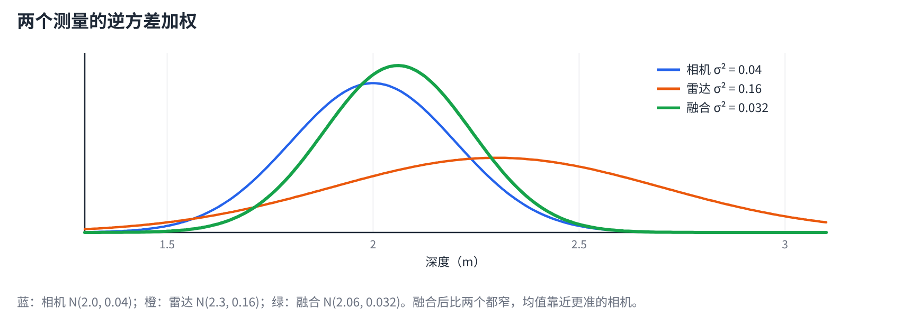
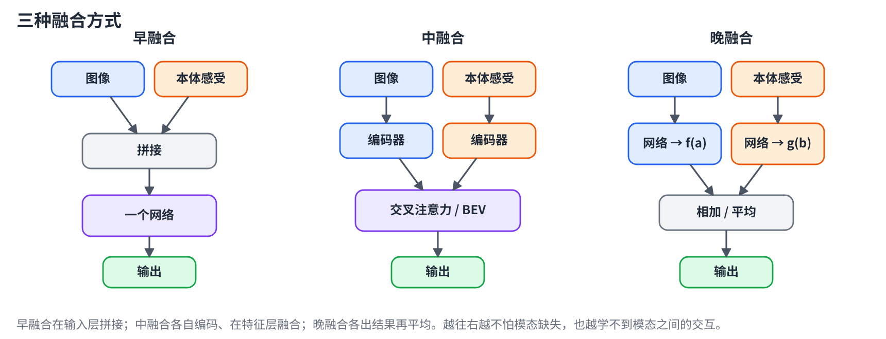
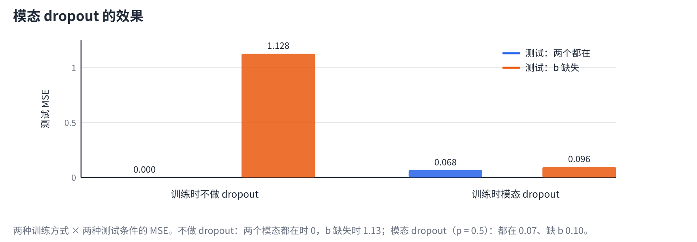
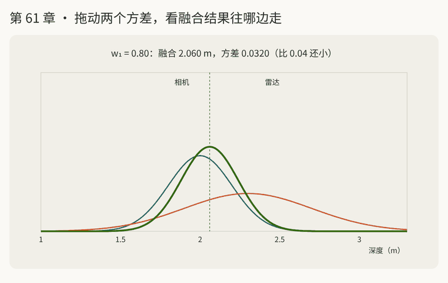

第 61 章 · 多模态融合的数学：逆方差加权、早 / 中 / 晚融合、交叉注意力与 Perceiver、模态缺失
本地运行
git clone https://github.com/wikieden/math-and-eval-stats
cd math-and-eval-stats/code/notebooks
pip install jupyterlab torch numpy
jupyter lab ch61_multimodal_fusion.ipynb也可以下载后直接用 VS Code 打开 .ipynb 运行。需要 GPU 的章节在 Colab 里选「代码执行程序 → 更改运行时类型 → GPU」。
本章回答：相机说 2.0 m、雷达说 2.3 m，该信谁、信多少？为什么“逆方差加权”就是 Kalman 更新？把图像和本体感受“早一点拼”还是“各自出结果再平均”，差别在哪？Perceiver 怎么用几百个潜变量读五万个像素？训练时故意扔掉一个模态（模态 dropout）图的是什么？
讲解日期：2026-11-25 · 上一章：第 60 章 感知的学习与评测 · 下一章：第 62 章 视觉-语言对齐的数学
对应原文：Perceivermath-and-eval-stats/materials/text/papers/perceiver-2103.03206.txt（§2：自注意力 O(M²)、M = 50176，L181–L208；潜变量数组 N ≪ M、交叉注意力 O(MN)、潜变量 Transformer O(N²)，L214–L223）；BEVFusionbevfusion-2205.13542.txt（统一到 BEV 再融合，下一部分第 64 章细讲）
本章缩写：σ² = 方差；K = Kalman 增益（Kalman gain）；R² = 决定系数（coefficient of determination：1 − 残差方差 / 总方差）；M / N = 输入个数 / 潜变量个数；Q / K / V = Query / Key / Value（查询 / 键 / 值）；MSE = Mean Squared Error（均方误差）。全部缩写见 附录 · 缩写与术语表
讲解
第一步：逆方差加权：谁准就多信谁（2026-11-25）
类比：两个人报同一个数，一个一向很准、一个常常估错。合理的做法不是简单平均，而是“准的那个权重大”。“准”用方差衡量：方差越小，权重越大。
两个独立、无偏的测量 \(z_1\)（方差 \(\sigma_1^2\)）和 \(z_2\)（方差 \(\sigma_2^2\)），使融合方差最小的线性组合是
“精度”（方差的倒数）直接相加，所以融合后的方差一定比两个都小。这正是第 20 章 Kalman 更新的一维特例：把 \(z_1\) 当先验、\(z_2\) 当观测，\(K = \sigma_1^2/(\sigma_1^2+\sigma_2^2)\)，\(\hat x = z_1 + K(z_2 - z_1)\)，结果一模一样。也和第 9 章“两个高斯相乘还是高斯、精度相加”是同一件事。
例子（相机深度 2.0 m、σ² = 0.04；雷达 2.3 m、σ² = 0.16）：
| 算法 | 权重 / 增益 | 融合值 | 融合方差 |
|---|---|---|---|
| 逆方差加权 | w₁ = 0.80 | 2.060 m | 0.032 |
| Kalman 更新（相机作先验） | K = 0.20 | 2.060 m | 0.032 |
| 雷达谎报 σ² = 0.01 | w₁ = 0.20 | 2.240 m | — |
最后一行是实际系统最常见的坑：权重完全由报上来的方差决定。某个传感器的方差标得过小（过度自信），融合结果就被它拉走，而且融合方差还会显示“很准”。

图 61-1 · 蓝：相机 N(2.0, 0.04)；橙：雷达 N(2.3, 0.16)；绿：融合后 N(2.06, 0.032)，比两个都窄，也更靠近更准的相机一句话：逆方差加权 = 精度相加、按精度加权，它就是一维 Kalman 更新；权重取决于报出的方差，方差标错就会被拉偏。
第二步：早融合、中融合、晚融合（2026-11-25）
类比：两个专家各自写报告再投票（晚融合），和两个人坐在一起讨论（早融合）。如果答案只有把两人的信息放在一起才能得出，投票永远得不到。
- 早融合：输入层就拼起来（或者 token 级拼接），一个网络从头处理。表达力最强，但两个模态的采样率、坐标系要先对齐（第 64 章）。
- 晚融合：每个模态各出一个结果 \(f(a)\)、\(g(b)\)，再相加 / 平均 / 投票。模块化、缺一个模态也能用，但只能表示可加的函数 \(f(a)+g(b)\)。
- 中融合：各自编码到中间特征，再用拼接、交叉注意力（第三步）或统一坐标系（BEV）融合。现代多模态模型大多是这一类。
例子：标签 \(y = a\cdot b\)（例如“物体在左边 × 指令说左”才动作）。晚融合给每个模态各用 1、x、x²、x³ 四个多项式特征，再加起来最小二乘；早融合多给一个交叉项 \(a\cdot b\)：
| 做法 | 能表示的函数 | R² |
|---|---|---|
| 晚融合 \(f(a) + g(b)\) | 只有可加部分 | 0.0363 |
| 早融合（含交叉项） | 包含 \(a\cdot b\) | 1.0000 |
\(a\)、\(b\) 在 [−1, 1] 上独立对称，\(a\cdot b\) 和任何只依赖 \(a\) 或只依赖 \(b\) 的函数都不相关，所以晚融合再加多少特征也拟合不出来。

图 61-2 · 左：早融合（输入拼起来）；中：中融合（各自编码，再在特征层用交叉注意力 / BEV 拼接）；右：晚融合（各出结果再平均）。越往左越能学模态之间的交互，越往右越模块化、越容易处理模态缺失一句话：晚融合只能表示可加的函数，模态之间的交互（“这个 × 那个”）要靠早融合或中融合来学。
第三步：交叉注意力与 Perceiver 的潜变量（2026-11-25）
交叉注意力（第 37 章）：Query 来自一边，Key / Value 来自另一边，\(\text{softmax}(QK^\top/\sqrt d)V\)。在融合里常见两种用法：动作 / 语言 token 当 Query 去“读”图像特征；或者像 Perceiver 那样，用一组可学习的潜变量去读所有模态。
Perceiver 的问题（§2，L181–L208）：一张 224 × 224 的图有 M = 50176 个像素，直接自注意力是 O(M²)。办法（L214–L223）：N ≪ M 个潜变量做 Query、所有输入做 Key / Value，交叉注意力 O(MN)；之后只在潜变量之间做自注意力 O(N²)。
例子（M = 50176、N = 512，注意力分数矩阵的元素个数）：
| 哪一种注意力 | 元素个数 |
|---|---|
| 输入自注意力 M² | 2,517,630,976 |
| 交叉注意力 M·N | 25,690,112（少 98 倍） |
| 潜变量自注意力 N² | 262,144 |
不同模态的输入只要都变成“一串向量 + 位置 / 模态编码”，就能一起放进 Key / Value，潜变量不关心它们来自哪里。
小例子：2 个潜变量（query (1, 0) 和 (0, 1)）读 4 个输入（key (2, 0)、(0, 2)、(1, 1)、(−1, 0)）：
| 输入 1 | 输入 2 | 输入 3 | 输入 4 | |
|---|---|---|---|---|
| 潜变量 1 | 0.539 | 0.131 | 0.266 | 0.065 |
| 潜变量 2 | 0.123 | 0.505 | 0.249 | 0.123 |
每个潜变量主要读和自己方向一致的输入，第 3 个输入（两个方向都有）两个都读一些。
场景代码：PyTorch 里用一组潜变量做交叉注意力（真实库调用；本书环境没装 torch，没跑过）：
latents = nn.Parameter(torch.randn(1, 512, d)) # N = 512 个潜变量
attn = nn.MultiheadAttention(d, num_heads=8, batch_first=True)
tokens = torch.cat([img_tokens, proprio_tokens, lang_tokens], 1) # 各模态先投到同一维 d
z, _ = attn(latents.expand(B, -1, -1), tokens, tokens) # Q = 潜变量，K = V = 所有输入
一句话：交叉注意力让一边读另一边；Perceiver 用 N 个潜变量读 M 个输入，把 O(M²) 降到 O(MN) + O(N²)，多个模态都能塞进同一组 Key / Value。
第四步：模态缺失与模态 dropout（2026-11-25）
实际机器人上，相机会被挡、雷达会掉帧、有的数据集根本没有某个模态。两个问题：缺失时填什么、训练时怎么让模型不依赖某一个模态。
- 逆方差视角：缺失 = 方差 → ∞ = 权重 → 0，公式自然退化成只用剩下的那个。
- 网络视角：填 0 或一个可学习的“缺失 token”，再加一个“在不在”的标志。问题是如果训练时这个模态从不缺，网络会把它当成必有，测试时一缺就崩。
- 模态 dropout：训练时以概率 p 把某个模态整个置空，逼网络学会只用剩下的模态也能做。
例子：两个相关模态 \(b = a + 0.3\cdot\)噪声，标签 \(y = a + b\)；线性模型的输入是 \([a,\ b\cdot m,\ m]\)，\(m\) 是“b 在不在”的标志：
| 训练方式 | 测试：两个都在 | 测试：b 缺失 |
|---|---|---|
| 不做 dropout | MSE 0.000 | MSE 1.128 |
| 模态 dropout（p = 0.5） | MSE 0.068 | MSE 0.096 |
不做 dropout 的模型学到 \(\hat y = a + b\)，b 一缺就少了一半；做了 dropout 的模型在 a 上放了更大的权重，b 缺失时也只差一点，代价是两个都在时略差（这个线性模型没法在 m = 1 和 m = 0 时用不同的 a 权重；真实网络可以通过门控把这点差距缩小）。

图 61-3 · 两种训练方式在两种测试条件下的 MSE。不做 dropout：都在时完美，b 缺失时误差 1.13；做了模态 dropout：两种情况都在 0.1 左右一句话：缺失在概率上就是方差无穷大；网络要靠训练时的模态 dropout 才学得会“少一个模态也能干活”，代价是满模态时略差一点。
动画演示：拖动两个方差，看融合结果往哪边走

可交互版：animations/61-multimodal-fusion.html（两个滑块分别调相机和雷达报出的方差；勾选框模拟雷达掉线）。
怎么看：
- 蓝、橙是两个测量的高斯，绿色是融合结果（第一步）；
- 把雷达的方差调小，绿色往雷达那边走，同时变得更窄；右上角的 w₁ 和融合方差跟着变；
- 勾上“雷达掉线”：相当于方差 → ∞，绿色和蓝色重合（第四步）。
练习与作答记录
题 1（第一步）：\(z_1 = 10\)（σ² = 1）、\(z_2 = 12\)（σ² = 4），逆方差加权的融合值和融合方差各是多少？
作答：（待作答）
题 2（第二步）：标签是 \(y = a^2 + b\)，晚融合（各自的多项式相加）能拟合吗？为什么和 \(y = a\cdot b\) 不同？
作答：（待作答）
题 3（第三步）：一段 10 万个输入 token 的多模态序列、N = 256 个潜变量，交叉注意力的分数矩阵比输入自注意力小多少倍？
作答：（待作答）
口诀
精度相加、按精度加权，逆方差就是一维 Kalman；方差报错就被拉偏；
晚融合只会加法，交互要早融合或中融合；
潜变量读输入，M² 变 MN；
缺失就是方差无穷，训练要扔模态才不怕缺。
本章复习卡片
ST198（逆方差加权与 Kalman 更新的关系）、ST199（早 / 中 / 晚融合与可加函数）、ST200（Perceiver 的复杂度；模态缺失与模态 dropout）。练习做完后，按答错、卡住的地方补上。
附录 · 延伸阅读
留给以后深入学习用，不影响本章主线。★ 是建议先读的。
推荐阅读
| 读什么 | 读哪里 | 读它为了什么 |
|---|---|---|
| ★ Perceiver（Jaegle 2021） | §2（L181–L223） | 潜变量交叉注意力与复杂度 |
| ★ 第 20 章 状态估计 | Kalman 更新一节 | 逆方差加权的一般形式 |
| 第 9 章 高斯 | 高斯乘积一节 | 精度相加 |
| 第 37 章 注意力的数学 | 交叉注意力 | Q / K / V 的来源 |
| BEVFusion（Liu 2022） | §3（第 64 章细讲） | 中融合的典型：统一到 BEV |
数学原理
- 最小方差无偏线性组合：min Var(w z₁ + (1 − w) z₂) ⇒ w = σ₂²/(σ₁² + σ₂²)；多维时 \(\hat x = (\sum \Sigma_i^{-1})^{-1}\sum\Sigma_i^{-1}z_i\)。
- 可加模型的局限：在独立对称的输入上，\(a\cdot b\) 和所有 \(f(a)+g(b)\) 正交，投影为 0。
- 交叉注意力的复杂度：分数矩阵 N × M；N 固定时对输入个数线性。
- 缺失 = 无穷方差：精度 1/σ² → 0，对应的项从和式里消失。
公式清单
| 公式 | 意思 |
|---|---|
| \(\hat x = \frac{\sum z_i/\sigma_i^2}{\sum 1/\sigma_i^2}\) | 逆方差加权 |
| \(1/\sigma^2 = \sum 1/\sigma_i^2\) | 精度相加 |
| \(K = \frac{P}{P+R}\)，\(\hat x = x + K(z - x)\) | 一维 Kalman 更新 |
| \(\text{softmax}(QK^\top/\sqrt d)V\)，Q 来自潜变量 | 交叉注意力 |
| O(M²) → O(MN) + O(N²) | Perceiver 的复杂度 |
代码对照：把本章的数字用代码算一遍
代码在仓库本地
math-and-eval-stats/solutions/chapter-code/ch61_multimodal_fusion.py，配套测试tests/test_ch61.py：
bash cd math-and-eval-stats/solutions/chapter-code uv run python ch61_multimodal_fusion.py uv run pytest tests/test_ch61.py
讲义 ↔ 代码：
| 讲义 | 公式 | 写法 | 跑出来 |
|---|---|---|---|
| 第一步 逆方差加权 | 精度加权 | inv_var、kalman_1d |
2.060、0.032（两种写法一样） |
| 第二步 早 / 晚融合 | 最小二乘拟合 \(a\cdot b\) | fusion_fit() |
R² 0.0363 vs 1.0000 |
| 第三步 Perceiver | 分数矩阵大小 | attn_cost()、cross_attn() |
2.5e9 vs 2.6e7 |
| 第四步 模态 dropout | 训练时置空 b | modality_dropout() |
缺 b：1.128 vs 0.096 |
关键几行：
w1 = (1 / v1) / (1 / v1 + 1 / v2) # 逆方差权重
early = np.concatenate([late, (a * b)[:, None]], 1) # 早融合多了交叉项
keep = (rng.uniform(size=n) > p).astype(float) # 模态 dropout：以概率 p 扔掉 b
代码里才看得到的 3 件事：
- “在不在”标志位很重要：只把 b 置 0、不给标志，模型分不清“b 真的是 0”和“b 缺失”。
- 晚融合的特征再多也没用：
late里加到 a⁶、b⁶，R² 也不会上去，缺的是交叉项。 - 只算了一组读数：仿真两路带噪传感器、验证融合方差的实验留给里程碑 ME-M36。
自己改一改（不影响练习答案）：
- 把
modality_dropout的 p 改成 0.1 和 0.9，两种测试条件下的 MSE 怎么变？ - 给
modality_dropout的特征加一列a * present（门控），满模态时的误差还在吗？